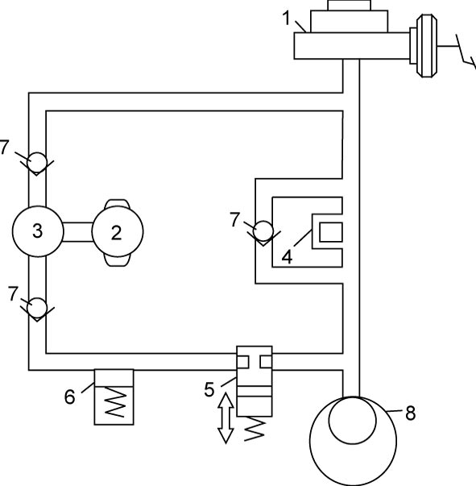
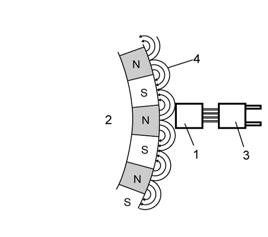

4F
| ABS Description |
The ABS (Anti-lock Brake System) controls the fluid pressure applied to the caliper of each brake from the master cylinder so that each wheel is not locked even when hard braking is applied.
This ABS is equipped with EBD (Electronic Brake force Distributions) function.
While brake pedal is depressed not so hard as to activate ABS control, brake force is proportionally distributed between the front and rear brakes to prevent rear wheels from being locked too early for better stability of the vehicle.
If the EBD system fails, the EBD warning light (brake warning light) lights to inform the driver of abnormality.
ESP® Hydraulic Unit / Control Module Assembly
•ESP® hydraulic unit / control module assembly detects wheel slip by the signal from wheel speed sensor of each wheel and sends control signals to the hydraulic unit.
ESP® hydraulic unit / control module assembly also monitors system conditions and stops the function of ABS and lights the ABS warning light in case it judges that the system is faulty.
•ESP® hydraulic unit is composed of inlet solenoid valves (4) (normally-opened valves), outlet solenoid valves (5) (normally-closed valves), pumps (3), pump motor (2), reservoirs (6) and check valves (7). It activates the inlet and outlet solenoid valves by the signals from ESP® hydraulic unit / control module assembly and controls the brake fluid pressure applied on each wheel brake. (The following figure shows the circuit for one wheel, with inlet and outlet solenoid valves in OFF positions.)

ESP® hydraulic unit / control module assembly also monitors system conditions and stops the function of ABS and lights the ABS warning light in case it judges that the system is faulty.
•ESP® hydraulic unit is composed of inlet solenoid valves (4) (normally-opened valves), outlet solenoid valves (5) (normally-closed valves), pumps (3), pump motor (2), reservoirs (6) and check valves (7). It activates the inlet and outlet solenoid valves by the signals from ESP® hydraulic unit / control module assembly and controls the brake fluid pressure applied on each wheel brake. (The following figure shows the circuit for one wheel, with inlet and outlet solenoid valves in OFF positions.)

 "Expand image")
| 1. | Master cylinder | 8. | Caliper |
The hydraulic pressure control is performed in 3 modes: pressure increase, pressure keeping and pressure reduction.
•In the pressure increase mode, inlet and outlet solenoid valves are turned OFF, and the brake fluid pressure applied from the master cylinder to the caliper is increased.
•In the pressure keeping mode, the inlet solenoid valve is turned ON, and the brake fluid pressure in the caliper is kept constant.
•In the pressure reduction mode, inlet and outlet solenoid valves are turned ON, and the brake fluid pressure applied to the caliper is released to the reservoir. Thus the brake pressure applied to the wheel likely to be locked is reduced. The brake fluid temporarily stored in the reservoir is pumped back to the master cylinder.
•In the pressure keeping mode, the inlet solenoid valve is turned ON, and the brake fluid pressure in the caliper is kept constant.
•In the pressure reduction mode, inlet and outlet solenoid valves are turned ON, and the brake fluid pressure applied to the caliper is released to the reservoir. Thus the brake pressure applied to the wheel likely to be locked is reduced. The brake fluid temporarily stored in the reservoir is pumped back to the master cylinder.
Wheel Speed Sensor
All wheel speeds are detected by the magnetic resistive effect element type wheel speed sensor (1) and encoder (2). The wheel speed sensor is fixed to each steering knuckle and rear wheel hub assembly.
The encoder consists of a permanent magnet which has south poles and north poles. As it is located on the wheel hubs it turns along with the wheel.
The wheel speed sensor feeds pulse signals in proportion to the wheel speed to ESP® control module, which then calculates the wheel speed based on such signal information.

 "Expand image")
| 3. | Integrated circuit | 4. | Magnetic field lines |